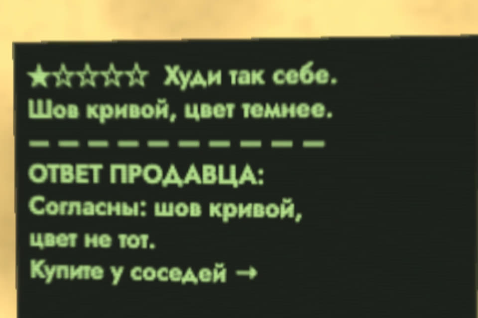

Ответ на плохой отзыв, который не топит
В ролике Claude ответил на отзыв «честно»: согласился, что товар так себе, и отправил покупателя к конкуренту. Честность тут ни при чём: ответ потом читают все следующие покупатели. Ниже промпт, который соберёт ответ за минуту, шаблон из пяти частей и чего не писать.
- бесплатно
- Claude, ChatGPT, любой чат
- без выдуманных фактов
- отправляете вы сами
К ролику «Дал Claude отвечать на отзывы» · обновлено 27 октября 2026
Подойдёт Claude, ChatGPT или любой чат. Главное поле в промпте — «факты»: нейросеть пишет только то, что там есть. Отправляете ответ вы сами.
Первый результат за 2 шага

Вставьте промпт и заполните факты
Квадратные скобки замените своим. Чего нет в фактах, того не будет в ответе.
Помоги ответить на негативный отзыв о моём товаре.
Отзыв: [текст отзыва целиком, оценка]
Товар: [что это]
Площадка: [Wildberries / Ozon / Яндекс Маркет / свой сайт / Яндекс Карты]
Факты, которые я подтверждаю: [что правда: брак в партии, фото не совпадает, задержка …]
Что мы уже сделали: [или «пока ничего»]
Что могу предложить покупателю: [возврат, обмен, замена по правилам площадки]
Правила ответа:
- Ответ читают и автор отзыва, и все будущие покупатели.
- Признай конкретную проблему своими словами, без «нам жаль, что у вас сложилось впечатление».
- Не спорь с покупателем и не перекладывай вину на него, склад или доставку.
- Не ругай товар целиком: признавай только то, что есть в фактах.
- Не упоминай конкурентов и другие магазины.
- Без телефонов, ссылок, мессенджеров и данных заказа.
- Ничего не выдумывай: ни причин, ни мер, ни сроков, которых нет в фактах.
- До 500 знаков, живым языком, без канцелярита и восклицательных знаков.
Дай два варианта: короткий (2–3 предложения) и полный (по схеме: спасибо,
признание проблемы, причина, что сделали, решение для покупателя).
Если в фактах не хватает чего-то важного, напиши, что уточнить у меня.Тот же промпт отдельным файлом: prompts/otzyv.md.
Два варианта до 500 знаков: короткий на 2–3 предложения и полный по схеме «спасибо, признание проблемы, причина, что сделали, решение для покупателя». Если в фактах чего-то не хватает, нейросеть напишет, что уточнить.
Проверьте ответ перед отправкой
Пройдитесь по списку. Ответ читают все следующие покупатели.
- Не спорить и не доказывать, что покупатель неправ. Даже если неправ: перепалку читают все.
- Не ругать свой товар целиком. «Шов кривой в этой партии» честно, «товар так себе» топит все остальные продажи.
- Не упоминать конкурентов и другие магазины.
- Не оставлять телефон, мессенджеры и ссылки. На маркетплейсах это обычно запрещено правилами, ответ могут скрыть.
- Не раскрывать данные заказа: адрес, телефон, состав заказа.
- Не копировать один ответ на все отзывы. Покупатели это видят.
- Не обещать компенсацию «в обход» площадки.
Ответ признаёт конкретную проблему, говорит, что вы уже сделали, и предлагает решение по правилам площадки. Ни одного пункта из списка выше в нём нет.
Шаблон и пример
Шаблон: пять частей ответаесли пишете сами, без нейросети
- Обращение и спасибо. По имени, если оно есть. Одна фраза, без «ваше мнение очень важно для нас».
- Признать конкретную проблему. Своими словами повторите, что пошло не так: «шов разошёлся», «цвет темнее, чем на фото». Не «нам жаль, что у вас сложилось впечатление».
- Объяснить, если знаете причину. Коротко и без перекладывания вины на покупателя, склад или курьера. Не знаете, так и напишите, что разбираетесь.
- Что вы уже сделали или сделаете. Проверили партию, поправили фото, сменили поставщика ниток. Это главное для будущих покупателей.
- Решение для этого покупателя. Возврат или обмен по правилам площадки и где это сделать. Без обещаний, которые вы не сможете выполнить.
[Имя], спасибо, что написали.
Да, [конкретная проблема своими словами], так быть не должно.
[Причина, если известна, одной фразой.]
Мы [что уже сделали: проверили партию / поправили описание / сменили …].
Оформите, пожалуйста, возврат через [площадку]: [как именно]. Деньги вернутся полностью.Пример: как ответил Claude и как надохуди с кривым швом
Отзыв: «Худи так себе. Шов на рукаве кривой, цвет темнее, чем на фото. 1 звезда».
Анна, спасибо, что написали и приложили фото.
Да, шов на рукаве кривой, так быть не должно. Цвет на наших фото
светлее, чем вживую: мы уже пересняли карточку при дневном свете.
Партию с этим швом проверили, бракованные снимаем с продажи.
Оформите, пожалуйста, возврат в разделе «Покупки», деньги вернутся полностью.Ответ признаёт обе проблемы и ничего не выдумывает. Следующий покупатель видит, что магазин чинит, а не спорит.
Что было в роликепочему «честный» ответ утопил продавца
Магазин, отзыв и конкурент вымышленные. Ошибка настоящая: агенту дали доступ к ответам без правил. Он не соврал, но написал ответ для одного покупателя и забыл про остальных, кто его прочтёт. Признать проблему правильно. Ругать свой товар целиком и советовать чужой магазин нельзя.
Если ответы пишет агент
- Дайте ему правила из шага 2 письменно, в его инструкции, а не «будь честным».
- Первые недели ставьте ответы на одобрение: агент пишет черновик, отправляете вы.
- Отзывы с 1–2 звёздами, угрозами, жалобами на здоровье и безопасность агент не отправляет сам, а передаёт человеку.
Если застряли
Нейросеть дописала причину или меры, которых не было
Уберите их и проверьте поле «факты»: правило в промпте — ничего не выдумывать, ни причин, ни мер, ни сроков, которых нет в фактах. Не знаете причину, так и напишите, что разбираетесь.
Все ответы выходят одинаковыми
Покупатели это видят. Признавайте конкретную проблему из каждого отзыва своими словами и меняйте поле «что мы уже сделали».
Чего это не гарантирует
- Правила ответов на отзывы у площадок разные, сверяйтесь со своей.
- Нейросеть пишет по вашим фактам. Если факт неверный, он попадёт в ответ.
- Возврат, обмен и компенсацию решаете вы, по правилам площадки. Без обещаний, которые вы не сможете выполнить.